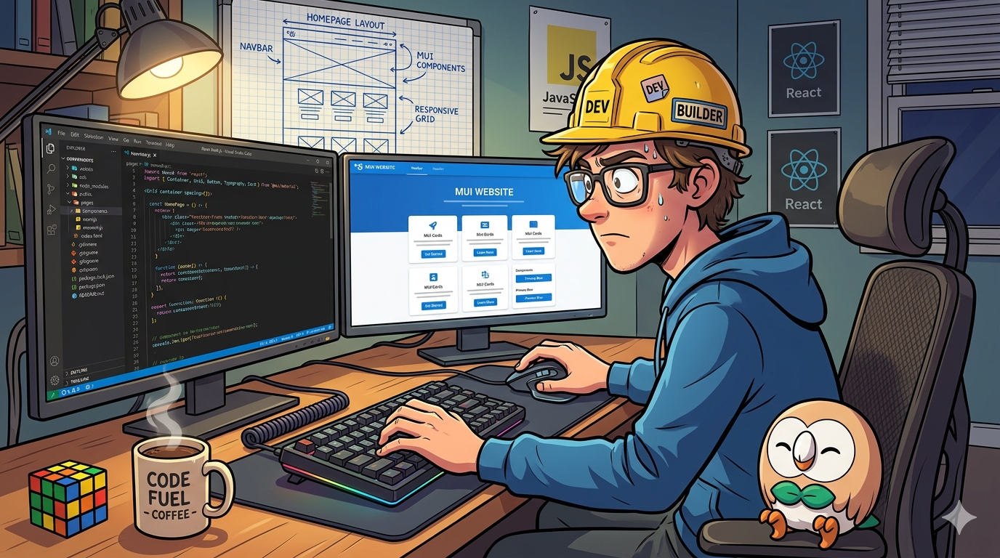

curlyrhapsody.github.io is under re-construction right now.
New version is expected to be constructed under Next.js, stay tuned!
A 1920x1080 comical art style image with no captions or other supportive texts.
A coder is wearing construction helmet and typing code into his computer.
His computer has two screens, one showing a VS Code IDE, full of codes written in React Next.JS, and another screen shows the preview of his website. The website is mainly constructed using Material UI components.
For the hardware the coder is using, he is using Aula F75 in Thunder Black color scheme as keyboard, and a Logitech MX Master 3S as mouse.
On the wall behind the computer, there is a blueprint showing a website. On his desk, there is a cup of coffee, a Rubik's cube, and a figure of Rowlet from Pokemon.
Please make sure the posture of the coder is correct. He should be facing the screens.

※ Displayed image is purely imagination and does not reflect acutal website construction scene.